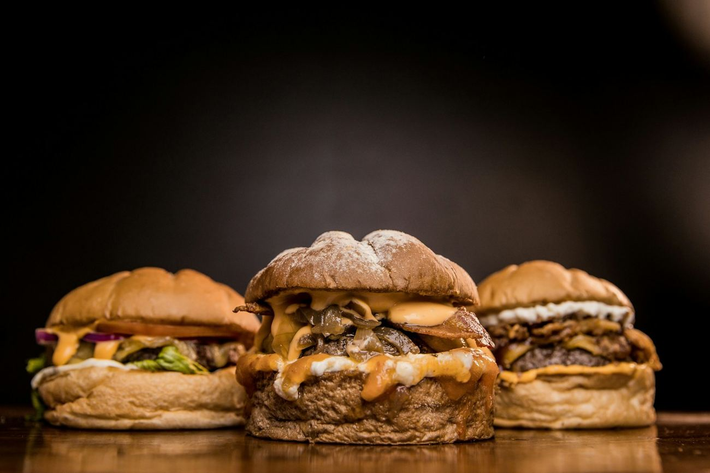
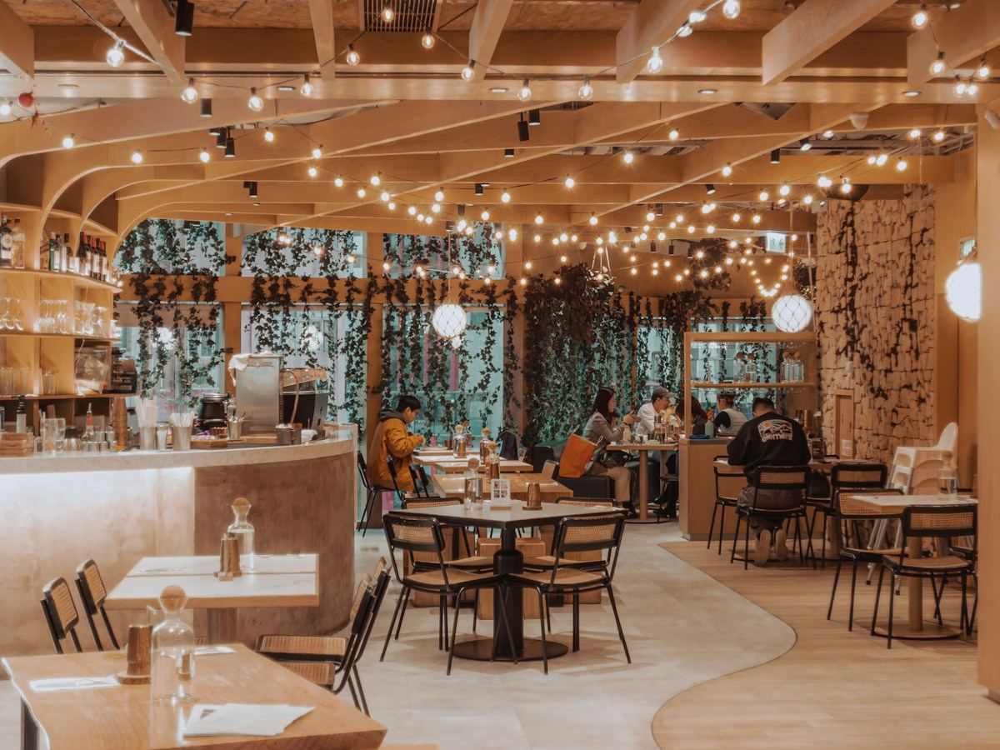

NOSSO CLÁSSICO
Burger da Casa
R$ 32,90Blend bovino de 160 g, queijo derretido, salada fresca e maionese da casa no pão brioche.
Pedir este sabor +PUXE UMA CADEIRA. A CASA É SUA.
Almoço caprichado, hambúrguer na chapa e conversa boa. Aqui, todo encontro merece uma mesa cheia.

Pão macio. Carne no ponto. Sabor de sobra.

CHEGA MAIS. FICA À VONTADE.MUITO MAIS QUE UMA REFEIÇÃO
A gente acredita que comida boa aproxima. Por isso, nossa cozinha tem tempero brasileiro, receitas sem complicação e carinho em cada detalhe.
Do almoço no meio da semana ao hambúrguer de sexta à noite: tem sempre um lugar esperando por você.
Da chapa para a mesa, com cuidado no preparo.
Molhos da casa e aquele tempero que acolhe.
Um espaço para a família, os amigos e a boa conversa.
BOM MESMO É QUANDO DÁ VONTADE DE VOLTAR
“O hambúrguer é muito caprichado e o molho da casa faz toda a diferença. Já virou nosso programa de sexta!”
“Comida com tempero de verdade. Arroz soltinho, carne no ponto e atendimento que faz a gente se sentir em casa.”
“Fomos em família e adoramos o clima. Pedimos uma porção para dividir e ninguém quis ir embora cedo.”
HOJE O ENCONTRO É AÍ
Escolha seu prato, chame no WhatsApp e deixe o resto com a gente. Também dá para pedir e retirar aqui.
Pedir pelo WhatsAppEscolha o que deu vontadeExplore nosso cardápio e encontre seu favorito.
Converse com a genteEnvie seu endereço e consulte taxa, prazo e pagamento.
Aproveite cada mordidaPedido e entrega confirmados diretamente no WhatsApp.
SEU PRÓXIMO ENCONTRO TEM LUGAR
Setor Sudoeste
Goiânia · Goiás
Consulte o ponto de atendimento pelo WhatsApp.
O mapa mostra a região do bairro.
UM POUQUINHO DA CASA NO SEU FEED